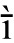
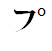
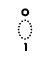
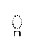

|
|
| Version | 4.1.0 |
| Authors | Ken Whistler |
| Date | 2005-03-25 |
| This Version | http://www.unicode.org/reports/tr34/tr34-3.html |
| Previous Version | http://www.unicode.org/reports/tr34/tr34-1.html |
| Latest Version | http://www.unicode.org/reports/tr34/ |
| Revision | 3 |
Summary
This annex defines the concept of a Unicode named character sequence, specifies a notational convention for them and a set of rules constraining possible names applied to character sequences, and gives the normative list of existing Unicode named character sequences.
Status
This document has been reviewed by Unicode members and other interested parties, and has been approved by the Unicode Technical Committee as a Unicode Standard Annex. This is a stable document and may be used as reference material or cited as a normative reference by other specifications.
A Unicode Standard Annex (UAX) forms an integral part of the Unicode Standard, but is published as a separate document. The Unicode Standard may require conformance to normative content in a Unicode Standard Annex, if so specified in the Conformance chapter of that version of the Unicode Standard. The version number of a UAX document corresponds to the version number of the Unicode Standard at the last point that the UAX document was updated.
Please submit corrigenda and other comments with the online reporting form [Feedback]. Related information that is useful in understanding this document is found in the References. For the latest version of the Unicode Standard see [Unicode]. For a list of current Unicode Technical Reports see [Reports]. For more information about versions of the Unicode Standard, see [Versions].
The Unicode Standard specifies notational conventions for referring to sequences of characters (or code points), using angle brackets surrounding a comma-delimited list of code points, code points plus character names, and so on. For example:
<U+0065, U+0302, U+0301>
or
<U+0065 LATIN SMALL LETTER A, U+0302 COMBINING CIRCUMFLEX ACCENT, U+0301 COMBINING ACUTE ACCENT>
to refer to a combining character sequence consisting of the letter 'a' with a circumflex and an acute accent applied to it.
See Section 0.3, Notational Conventions in [Unicode] for the description of the conventions for expression of code points and for the representation of sequences of code points.
The Unicode conventions for referring to a sequence of characters (or code points) are a generalization of the formal syntax specified in ISO/IEC 10646:2003 for UCS Sequence Identifiers, or USI. A USI has the form:
<UID1, UID2, ... UIDn>
where UID1, UID2, etc., represent the short identifiers for code points, that is, most commonly "U+0065" or "0065", and so on. A USI has the additional requirement that it must contain at least two code points.
Having a conventional notation for sequences of Unicode code points treated as a unit is useful in a number of circumstances. For example, other standards may need to refer to entities which are represented in Unicode by sequences of characters. Mapping tables may map single characters in other standards to sequences of Unicode characters. And listings of repertoire coverage for fonts or keyboards may need to reference entities which do not correspond to single Unicode code points.
In some limited circumstances it is necessary to also provide a name for such sequences. While it is clearly impossible to provide names for all possible sequences of Unicode characters that could be of any interest, the Unicode Standard defines a mechanism for naming sequences and a short list of sequences which have been formally named.
This annex defines the concept of a Unicode named character sequence, specifies a notational convention for them and a set of rules constraining possible names applied to character sequences, and gives the normative list of existing Unicode named character sequences.
Table 1 provides some examples of Unicode named character sequences, to illustrate the kinds of entities which have been formally named. The "Appearance" column illustrates the entity in question with a representative glyph. The "Code Points" column gives the actual sequence of encoded Unicode characters which represent that entity, and the "Name" column shows the name which has been associated with that sequence.
| Appearance | Code Points | Name | Notes on Usage |
|---|---|---|---|
|  | 012B 0300 | LATIN SMALL LETTER I WITH MACRON AND GRAVE | Livonian |
 |
02E5 02E9 | MODIFIER LETTER EXTRA-HIGH EXTRA-LOW CONTOUR TONE BAR | Contour tone letter |
|  | 31F7 309A | KATAKANA LETTER AINU P | Ainu in kana transcription |
|  | 17BB 17C6 | KHMER VOWEL SIGN SRAK OM | Khmer |
 |
17B6 17C6 | KHMER VOWEL SIGN SRAK AM | Khmer |
|  | 17D2 1780 | KHMER CONSONANT SIGN COENG KA | Khmer |
Unicode named character sequences differ from Unicode variation sequences. The latter are documented in Section 15.6, Variation Selectors in [Unicode] and are listed exhaustively in the data file StandardizedVariants.txt in the Unicode Character Database [UCD].
Variation sequences consist of a sequence of code points, but they can only be two code points in length, there are constraints on which types of characters they can start with, and they must have a variation selector as their second code point. Variation sequences have a specifically defined glyphic shape, but have no associated name.
Named character sequences can, in principle, consist of code point sequences of any length, without constraints on what types of characters are involved. They do not have a specifically defined glyphic shape, but they do have a formally specified name associated with them.
| D1 |
Unicode named character sequence: A specific sequence of two or more Unicode characters, together with a formal name designating that sequence. |
The notation for a Unicode named character sequence makes use of the general conventions for character sequences in the standard, together with name conventions as specified in Section 4, Names below. Thus a typical representation of a Unicode named character sequence would be as:
<U+012B, U+0300> LATIN SMALL LETTER I WITH MACRON AND GRAVE
In contexts which supply other clear means for delimitation, such as data files or tables, the bracketing and comma delimitation conventions for the sequences may be dropped, as in:
012B 0300;LATIN SMALL LETTER I WITH MACRON AND GRAVE
Conformance to the Unicode Standard requires conformance to the specification in this document. The relationship between conformance to the Unicode Standard, and conformance to an individual Unicode Standard Annex (UAX) is described in more detail in Section 3.2, Conformance Requirements in [Unicode].
| C1 |
If a process purports to implement Unicode named character sequences, it shall use only those named character sequences defined in the file NamedSequences.txt in the Unicode Character Database. |
Only the named character sequences in NamedSequences.txt are defined in this standard. No other Unicode character sequences are given names, although additional named character sequences might be added to NamedSequences.txt in the future.
Conformance to this clause should not be construed as preventing implementers from providing informal names of their choice to any entities or character sequences, as appropriate. However, such informal names are not specified in any way by this standard for use in interchange.
Names of Unicode named character sequences are unique. They are part of the same name space as Unicode character names. As a result, where a name exists as a character name, a modified name must be assigned instead. The same applies to not-yet-encoded characters.
Where possible, the names for sequences are constructed by appending the names of the constituent elements together while eliding duplicate elements. Where this process would result in a name that already exists, the name is modified suitably to guarantee uniqueness.
| USI | Alternate Representation of Sequence | Name |
|---|---|---|
|
<0041, 0043, 0043> |
<A, B, C> | LATIN CAPITAL LETTER A B C |
|
<00CA, 0046> |
<AE, F> | LATIN CAPITAL LETTER AE F |
|
<0058, 030A> |
<X, COMBINING RING ABOVE> | LATIN CAPITAL LETTER X WITH RING ABOVE |
Where names are constructed other than by merging existing character names for the constituent characters of the sequence, convention restricts any additional items to the Latin capital letters A to Z, SPACE, HYPHEN-MINUS and the digits 0 to 9, provided that a digit is not the first character in a word. This convention makes it possible to turn names into identifiers using straightforward transformations.
Names for named sequences are constructed according to the following rules:
R1: Only Latin capital letters A to Z,
Digits 0-9 (provided that a digit is not the first character in a word),
SPACE, and HYPHEN-MINUS are used for writing the names.
R2: Only one name is given to each
named sequence and each named sequence must have a unique name within the a
shared name space that also contains character names.
R3: Like character names, names for sequences are unique if they are different even when SPACE and medial HYPHEN-MINUS characters are ignored, and when the strings “LETTER”, “CHARACTER”, and “DIGIT” are ignored in comparison of the names.
The following two character names are exceptions to this rule, because
they were created before this rule was specified:
116C HANGUL JUNGSEONG OE
1180 HANGUL JUNGSEONG O-E
Examples of unacceptable names that are not
unique:
SARATI LETTER AA
SARATI CHARACTER AA
These two names would not be unique if the strings “LETTER” and “CHARACTER” were ignored.
R4: Where possible, names for named sequences are constructed by appending the names of the constituent elements together while eliding duplicate elements. Should this process result in a name that already exists, the name is modified suitably to guarantee uniqueness among character names and names for named sequences.
R5: Where applicable, the rules from Appendix L in ISO/IEC 10646:2003 apply.
Note: Just like character names, the names for sequences may be translated, with the translated names for each language being unique with respect to each other and the corresponding set of translated character names. However, translated names are not restricted to the same limited character set as the English names. Translated names may not be suitable as identifiers without modification.
A data file is available consisting of those named sequences defined by The Unicode Technical Committee. The sequences are listed in the data file in an abbreviated format. See [Data].
| [10646] | International Organization for Standardization.
Information Technology--Universal Multiple-Octet
Coded Character Set (UCS). (ISO/IEC
10646:2003). For availability see http://www.iso.org |
| [Charts] | The online code charts can be found
at http://www.unicode.org/charts/ An index to characters names with links to the corresponding chart is found at http://www.unicode.org/charts/charindex.html |
| [Data] | Named Sequences Data File For the latest version, see: http://www.unicode.org/Public/UNIDATA/NamedSequences.txt For the current version see: http://www.unicode.org/Public/4.1.0/ucd/NamedSequences.txt For other versions, see: http://www.unicode.org/versions/ |
| [Feedback] | Reporting Errors and Requesting Information Online http://www.unicode.org/reporting.html |
| [FAQ] | Unicode Frequently Asked Questions
http://www.unicode.org/faq/ For answers to common questions on technical issues. |
| [Glossary] | Unicode Glossary
http://www.unicode.org/glossary/ For explanations of terminology used in this and other documents. |
| [Reports] | Unicode Technical Reports
http://www.unicode.org/reports/ For information on the status and development process for technical reports, and for a list of technical reports. |
| [UCD] | Unicode Character Database. http://www.unicode.org/ucd/ For an overview of the Unicode Character Database and a list of its associated files |
| [Unicode] | The Unicode Standard For the latest version see: http://www.unicode.org/versions/latest/. For the current version see: http://www.unicode.org/versions/Unicode4.1.0/. For the last major version see: The Unicode Consortium. The Unicode Standard, Version 4.0. (Boston, MA, Addison-Wesley, 2003. 0-321-18578-1). |
| [Versions] | Versions of the Unicode Standard
http://www.unicode.org/versions/ For information on version numbering, and citing and referencing the Unicode Standard, the Unicode Character Database, and Unicode Technical Reports. |
The following summarizes modifications from the previous version of this document.
Revision 3Revision 2
Revision 1
Copyright © 2001-2005 Unicode, Inc. All Rights Reserved. The Unicode Consortium makes no expressed or implied warranty of any kind, and assumes no liability for errors or omissions. No liability is assumed for incidental and consequential damages in connection with or arising out of the use of the information or programs contained or accompanying this technical report. The Unicode Terms of Use apply.
Unicode and the Unicode logo are trademarks of Unicode, Inc., and are registered in some jurisdictions.